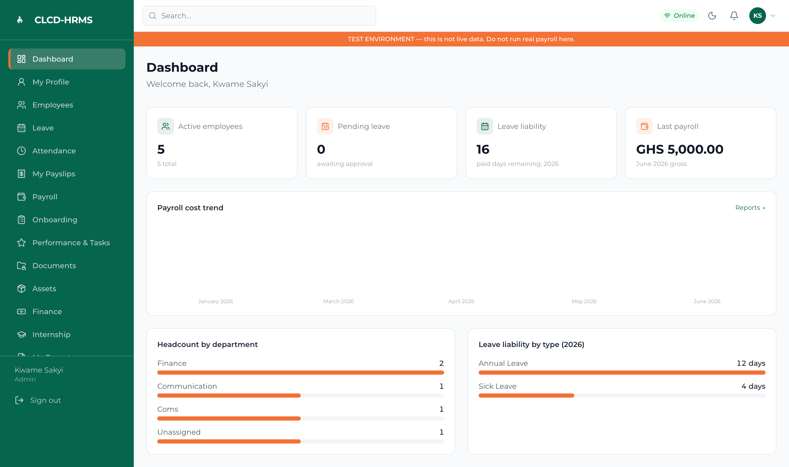
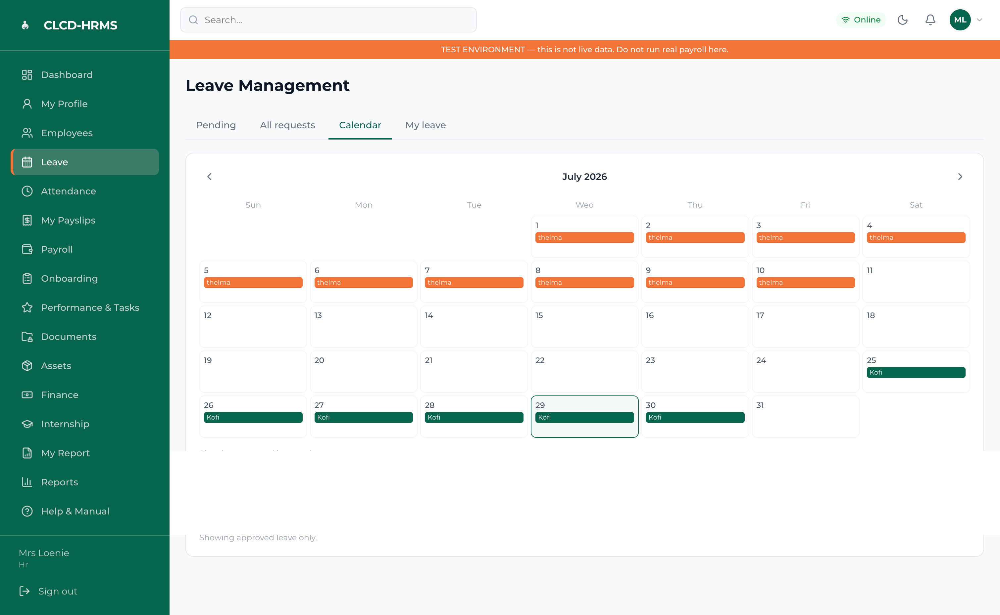
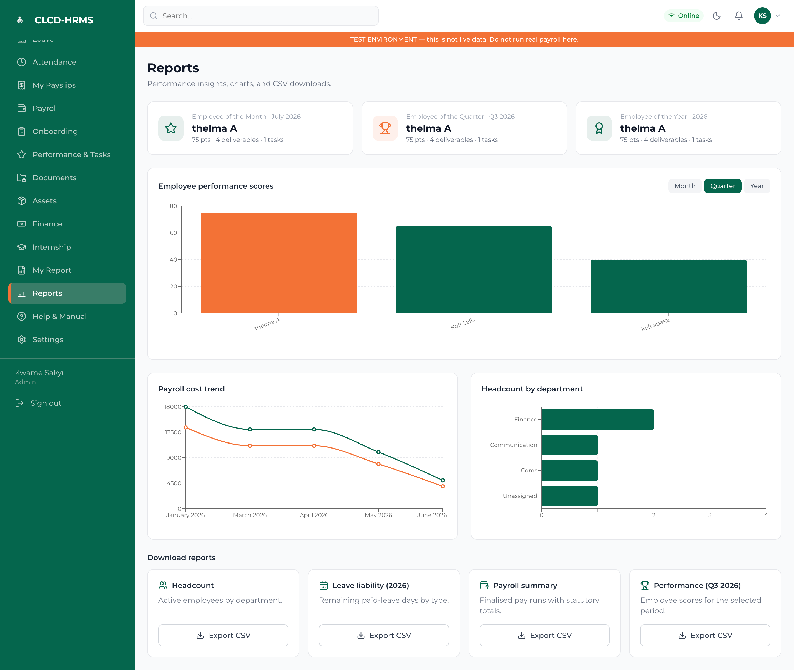

Overview
CLCD-HRMS is an installable HR and payroll system I designed and directed for CLCD Ghana, a community development organisation. It covers the full employment lifecycle — employee records, leave, attendance, onboarding, performance, documents, and an employee self-service portal — and, at its core, runs Ghana-compliant statutory payroll: GRA PAYE, SSNIT Tier 1 and Tier 2, and NHIL.
Two constraints shaped every decision. The payroll math has to be exactly right, because an error there is a legal and financial event, not a cosmetic bug. And the person running it may not be technical, so the whole system had to be calm and forgiving — clear labels, confirmation before anything irreversible, plain-language errors, and a written operator manual. The product's own promise says it plainly: HR and payroll "in one calm, secure place."
The Problem
Ghanaian statutory payroll is unforgiving. PAYE runs on progressive bands applied after a personal relief; SSNIT splits across an employer contribution, an employee contribution, and a Tier 2 payment to an approved trustee; NHIL and other deductions stack on top. The rates change from tax year to tax year, and a payslip calculated under this year's rules must stay correct forever, even after the rules move.
Off-the-shelf tools either don't model Ghanaian statutory rules or are priced and shaped for large corporate HR departments — not a lean organisation whose payroll might be run by an administrator or a finance officer rather than a payroll specialist. Before CLCD-HRMS, that work lived in spreadsheets: no enforced permissions, no audit trail, no guarantee that last year's payslips still reconciled, and no safe way to give staff visibility into their own records.
The Solution
I designed CLCD-HRMS as one installable app over a permission-controlled relational backend, organised around three ideas:
- A verified payroll engine at the core: A pure calculation module — gross, allowances, overtime, and loans in; itemised PAYE, SSNIT employee and employer, Tier 2, NHIL, and net pay out — built and tested in isolation against sample employees before it was wired to any screen.
- One dated source of truth for the law: Every statutory rate, band, and relief lives in a single dated config file. Nothing tax-related is hard-coded anywhere else, and each pay run stamps the rates version it used, so historical payslips stay correct after any future change.
- A calm, role-scoped interface: A Supabase-backed PWA where Row-Level Security means most staff see only their own record and payslips, HR and admin roles are explicit and least-privilege, and the riskiest actions are gated behind confirmation and clear system states.

Dashboard — active headcount, leave balances, and payroll cost trends in one clear view
Design Process
I started from the operator, not the org chart — asking what someone non-technical needs to do a payroll run without fear, and what must never be possible to do by accident. From there I set the requirements that governed the build:
- The payroll engine is proven correct before it touches the UI, and reads its rates from one dated file — never from logic buried in code
- Row-Level Security is default-deny on every table; staff read only their own data
- A finalised pay run is immutable and every salary change and pay-run action is audit-logged
- Irreversible actions require confirmation, and errors explain what happened and how to fix it
- Account ownership is never hard-coded — handover is a config swap, not a rebuild
The system was built phase by phase — foundation, employee records and self-service, leave, the payroll engine, pay runs and payslips, then onboarding, performance, documents, dashboards, and hardening — with each phase reviewed and tested before the next. The payroll engine had its own sign-off gate: it wasn't allowed to advance until it reproduced the expected PAYE, SSNIT, and net figures for sample employees across the salary range, to the cedi.

Employee profile — secure, role-scoped self-service dashboard for staff
Key Design Decisions
- Trust through verification, not assertion: The payroll engine is a pure module tested against known-good sample calculations before integration. Correctness is demonstrated, not assumed — which is the only honest posture when the output is someone's actual pay.
- The law as versioned data: Statutory rates live in one dated, editable config, and pay runs record which version they used. An annual rate update is a one-file edit that can't retroactively corrupt past payslips — a data-integrity decision expressed as an interface promise.
- Immutable, audited pay runs: Once a monthly run is finalised it locks and stamps its rates version, and every salary change and run action is written to an immutable audit log — who, what, when. Payroll history becomes a record, not a mutable draft.
- Forgiving by default: For a non-technical operator, confirmation steps, sensible defaults, inline help, and plain-language errors aren't polish — they're the safety system. A prominent "test environment — do not run real payroll here" banner keeps staging visibly separate from the real thing.
- Honest system states: The header shows Online, Offline, or Syncing, and payroll runs — which touch shared, sensitive data — are gated behind an explicit, friendly connectivity check rather than being allowed to fail silently.
- Least privilege as the default view: Self-service is scoped so an employee sees only their own profile, payslips, and leave balance. The interface's shape mirrors the permission model beneath it.
Technical Architecture
┌──────────────────────────────────────────────────────────┐
│ Supabase Cloud │
│ ┌───────────┐ ┌────────────┐ ┌───────────────────┐ │
│ │ Auth │ │ Postgres │ │ Storage │ │
│ │ Emp / HR /│ │ + Row-Level│ │ (contracts, IDs) │ │
│ │ Admin │ │ Security │ │ + RLS │ │
│ │ │ │ default- │ │ │ │
│ └─────┬─────┘ │ deny │ └────────┬──────────┘ │
│ │ └─────┬──────┘ encrypted│ export │
└────────┼───────────────┼───────────────────┼─────────────┘
│ │ ▼
┌─────┴───────────────┴─────┐ ┌──────────────────┐
│ CLCD-HRMS PWA │ │ Off-site backup │
│ React + TS · installable │ │ (tested restore)│
│ Online / Offline / Sync │ └──────────────────┘
└─────────────┬─────────────┘
│ pay run ── stamps rates-version, then locks
▼
┌───────────────────────────────┐ reads
│ Payroll Engine (pure) │ ───────────────┐
│ PAYE · SSNIT T1 + T2 · │ ▼
│ NHIL → net pay, itemised │ ┌────────────────────────┐
│ immutable once finalised │ │ ghana-rates.2026.ts │
└───────────────────────────────┘ │ single source · dated │
│ · operator-editable │
└────────────────────────┘
A verified pure engine reading one dated rates file; a role-scoped PWA over Postgres with default-deny security; encrypted, restore-tested backups the organisation owns.
The Modules
- Dashboard: A calm overview — active headcount, pending leave, leave liability, and the last payroll total — with a payroll-cost trend, headcount by department, and leave liability by type.
- Employees & Self-Service: A central employee record (role, salary structure, SSNIT / Ghana Card / TIN, bank details, documents), plus a self-service view where staff see only their own profile, payslips, and leave, and can request leave or update permitted fields.
- Leave & Attendance: Leave types and balances with a request-and-approval chain, an HR overview, accrual rules held in config, and attendance tracking.
- Payroll & Payslips: Monthly pay runs that lock on finalisation and stamp their rates version, producing branded payslips that itemise each statutory deduction, plus statutory-return totals for GRA and SSNIT filing.
- Onboarding, Performance & Documents: Onboarding and offboarding checklists, a performance and tasks cycle with recognition, and a secure document store on Supabase Storage with RLS.
- Reports: Performance scores, payroll-cost trend, and headcount charts, with CSV exports for headcount, leave liability, payroll summary, and performance — while any employee-facing view stays scoped to that person alone.

Reports — performance metrics, payroll trends, and historical export logs
Data Protection
The system holds salaries, national identifiers, and bank details, so it's built to a Ghana Data Protection Act posture: collect the minimum, control access tightly, and document retention. Row-Level Security is default-deny on every table, roles are least-privilege, and everything sensitive is audit-logged. Backups are encrypted off-site with a documented and tested restore, and encryption is enforced in transit and at rest. Ownership is deliberately account-agnostic — keys, hosting, and backup targets all live in configuration — so CLCD can take custody of the system by swapping config values, with nothing to rebuild.
Outcome
- Payroll proven to the cedi — the engine reproduces expected PAYE, SSNIT, and net figures across the salary range before it is trusted with a real run.
- History that stays correct — dated rates versioning and immutable, audit-logged pay runs mean past payslips remain accurate after the law changes.
- Usable by a non-specialist — a calm, forgiving interface with confirmations, plain-language errors, visible test-versus-live separation, and a written operator manual.
- Owned and handoff-ready — account-agnostic configuration and encrypted, restore-tested backups let CLCD run and take over the system independently.
What This Project Demonstrates
- Designing for correctness: Treating a high-stakes calculation as a first-class design problem — isolating it, testing it against known cases, and refusing to ship it on faith.
- Information architecture with consequences: Modelling statutory law as versioned data so the system stays honest across time, not just at a moment.
- UX for non-technical, high-stakes operators: Making a payroll run feel safe through confirmations, clear states, and forgiving copy rather than assuming expertise.
- Security and privacy by design: Default-deny permissions, least-privilege roles, audit logging, and a documented data-protection posture built in from the first phase.
- AI-assisted development as a design tool: Directing a phased build with explicit sign-off gates while owning every product, data-model, and experience decision.